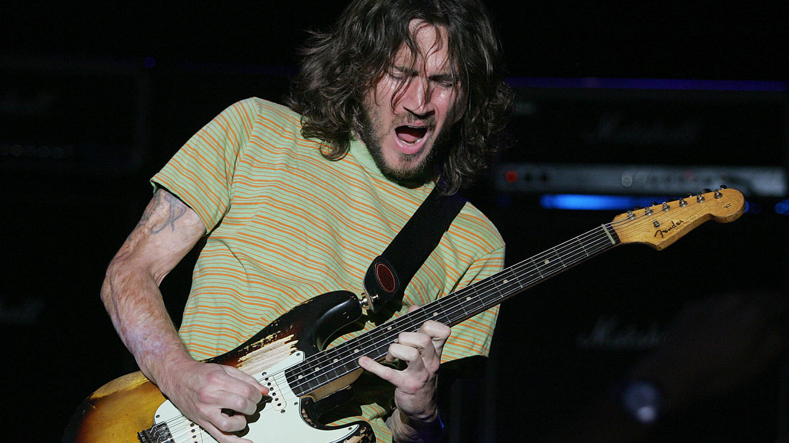
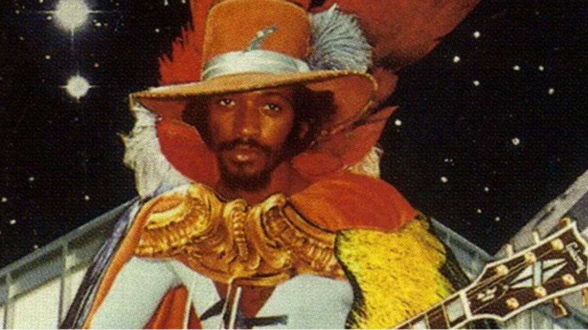

John Frusciante

John Frusciante is a hero of mine. He is the on again/off again guitarist for the band Red Hot Chili Peppers. His solo's are the CSS of the guitar soloing world - all style, colour and aesthetics. I named this site after a track of his called 'Look On', which features a deceptively simple yet incredibly captivating guitar solo. It weaves and dips and never stays still.
Check out Look On by John Frusciante!
David Gilmour
David Gilmour was both the lead guitarist and singer of the seminal band Pink Floyd. His solo's are the HTML of the guitar soloing world - basic, structured and controlled, yet producing utter beauty. A track that always takes me to a place of peace and relaxation is 'Marooned'.
Check out Marooned by Pink Floyd (performed by David Gilmour)!
Eddie Hazel

Eddie Hazel is responsible for the truly iconic track 'Maggot Brain', which is just one long guitar solo. Hazel's solo's are, for me, the guitar world's equivalent of the product of combined HTML and CSS - the combination of technique and style. 'Maggot Brain' is pure flow.
Check out Maggot Brain by Funkadelic (played by Eddie Hazel)!